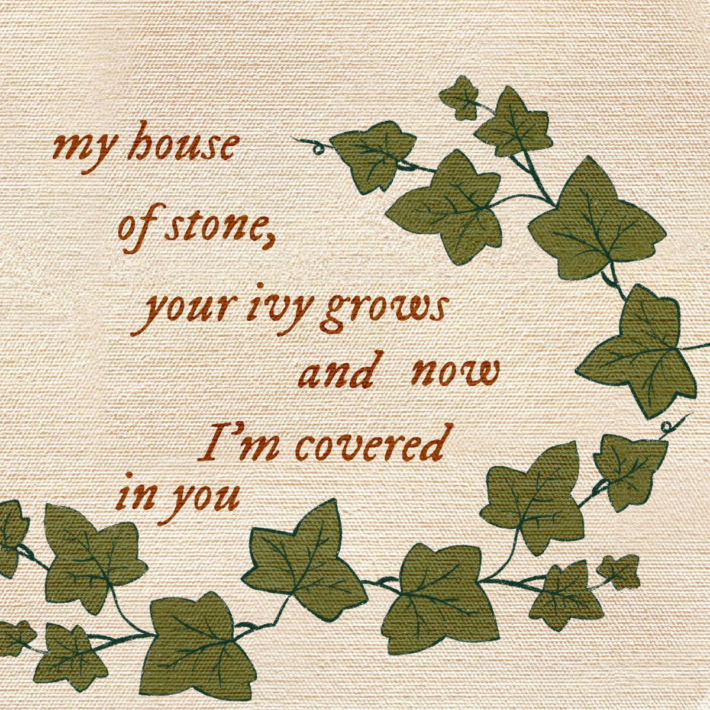
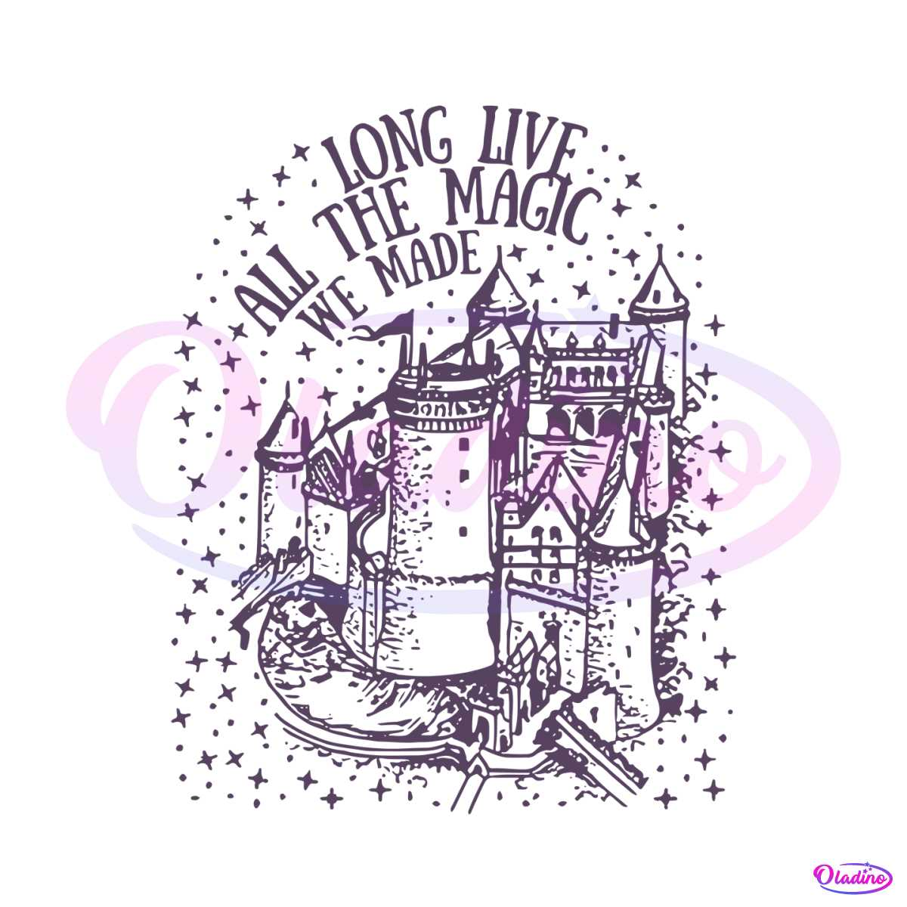
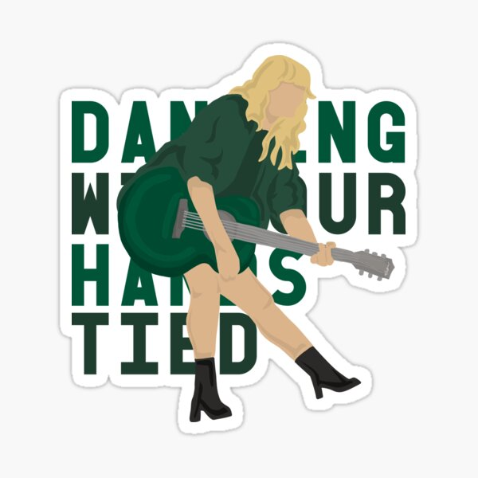

Ivy | Long Live | Dancing with our hands tied

How's one to know?
I'd meet you where the spirit meets the bones
In a faith forgotten land
In from the snow
Your touch brought forth an incandescent glow
Tarnished but so grand
And the old widow goes to the stone every day
But I don't, I just sit here and wait
Grieving for the living
Oh, goddamn
My pain fits in the palm of your freezing hand
Taking mine, but it's been promised to another
Oh, I can't
Stop you putting roots in my dreamland
My house of stone, your ivy grows
And now I'm covered in you
I wish to know
The fatal flaw that makes you long to be
Magnificently cursed
He's in the room
Your opal eyes are all I wish to see
He wants what's only yours
Oh, goddamn
My pain fits in the palm of your freezing hand
Taking mine, but it's been promised to another
Oh, I can't
Stop you putting roots in my dreamland
My house of stone, your ivy grows
And now I'm covered
Clover blooms in the fields
Spring breaks loose, the time is near
What would he do if he found us out?
Crescent moon, coast is clear
Spring breaks loose, but so does fear
He's gonna burn this house to the ground
How's one to know?
I'd live and die for moments that we stole
On begged and borrowed time
So tell me to run
Or dare to sit and watch what we'll become
And drink my husband's wine
Oh, goddamn
My pain fits in the palm of your freezing hand
Taking mine, but it's been promised to another
Oh, I can't
Stop you putting roots in my dreamland
My house of stone, your ivy grows
And now I'm covered in you
And I'm covered in you
So yeah, it's a fire
It's a goddamn blaze in the dark
And you started it
You started it
So yeah, it's a war
It's the goddamn fight of my life
And you started it
You started it
Oh, I can't
Stop you putting roots in my dreamland
My house of stone, your ivy grows
And now I'm covered
In you
In you, you
Now I'm covered in you
In you

I said remember this moment
In the back of my mind
The time we stood with our shaking hands
The crowds in stands went wild
We were the kings and the queens
And they read off our names
The night you danced like you knew our lives
Would never be the same
You held your head like a hero
On a history book page
It was the end of a decade
But the start of an age
Long live the walls we crashed through
How the kingdom lights shined just for me and you
I was screaming, "Long live all the magic we made"
And bring on all the pretenders
One day we will be remembered
I said remember this feeling
I passed the pictures around
Of all the years that we stood there on the sidelines
Wishing for right now
We are the kings and the queens
You traded your baseball cap for a crown
When they gave us our trophies
And we held them up for our town
And the cynics were outraged
Screaming, "This is absurd"
'Cause for a moment, a band of thieves
In ripped up jeans got to rule the world
Long live the walls we crashed through
How the kingdom lights shined just for me and you
I was screaming, "Long live all the magic we made"
And bring on all the pretenders, I'm not afraid
Long live all the mountains we moved
I had the time of my life fighting dragons with you
I was screaming, "Long live the look on your face"
And bring on all the pretenders
One day we will be remembered
Hold on to spinning around
Confetti falls to the ground
May these memories break our fall
Will you take a moment?
Promise me this
That you'll stand by me forever
But if, God forbid, fate should step in
And force us into a goodbye
If you have children someday
When they point to the pictures
Please tell them my name
Tell them how the crowds went wild
Tell them how I hope they shine
Long live the walls we crashed through
I had the time of my life with you
Long, long live the walls we crashed through
How the kingdom lights shined just for me and you
And I was screaming, "Long live all the magic we made"
And bring on all the pretenders, I'm not afraid
Singing long live all the mountains we moved
I had the time of my life fighting dragons with you
And long, long live the look on your face
And bring on all the pretenders
One day, we will be remembered

I, I loved you in secret
First sight, yeah, we love without reason
Oh, twenty-five years old
Oh, how were you to know, and
My, my love had been frozen
Deep blue, but you painted me golden
Oh, and you held me close
Oh, how was I to know that
I could've spent forever with your hands in my pockets
Picture of your face in an invisible locket
You said there was nothing in the world that could stop it
I had a bad feeling
And darling, you had turned my bed into a sacred oasis
People started talking, putting us through our paces
I knew there was no one in the world who could take it
I had a bad feeling
But we were dancing
Dancing with our hands tied, hands tied
Yeah, we were dancing
Like it was the first time, first time
Yeah, we were dancing
Dancing with our hands tied, hands tied
Yeah, we were dancing
And I had a bad feeling
But we were dancing
I, I loved you in spite of
Deep fears that the world would divide us
So, baby, can we dance
Oh, through an avalanche?
And say, say that we got it
I'm a mess, but I'm the mess that you wanted
Oh, 'cause it's gravity
Oh, keeping you with me
I could've spent forever with your hands in my pockets
Picture of your face in an invisible locket
You said there was nothing in the world that could stop it
I had a bad feeling
But we were dancing
Dancing with our hands tied, hands tied
Yeah, we were dancing
Like it was the first time, first time
Yeah, we were dancing
Dancing with our hands tied, hands tied
Yeah, we were dancing
(Ooh, we had our hands tied)
And I had a bad feeling
But we were dancing
I'd kiss you as the lights went out
Swaying as the room burned down
I'd hold you as the water rushes in
If I could dance with you again
I'd kiss you as the lights went out
Swaying as the room burned down
I'd hold you as the water rushes in
If I could dance with you again
Dancing with our hands tied, hands tied
Yeah, we were dancing
Like it was the first time, first time
Yeah, we were dancing
Dancing with our hands tied, hands tied
Yeah, we were dancing
And I had a bad feeling
But we were dancing
Hands tied, hands tied